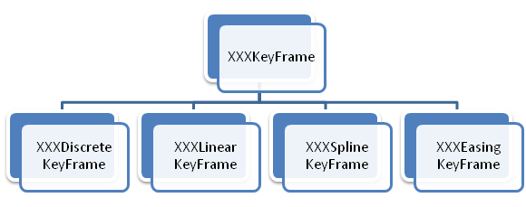

Single Timelines
Here are the timelines deriving from AnimationTimeline. This timelines can't contain other timelines.
AnimationTimeline
http://msdn.microsoft.com/en-us/library/system.windows.media.animation.animationtimeline.aspx
Is the base class for simple animations that outputs a value to an unique property. This class overrides the AllocateClock method, creating an AnimationClock.
| Methods | ||
|---|---|---|
| Name | Sup | Comments |
| CreateClock | Yes | Renamed to AllocateClock |
| GetCurrentValue | Yes | Renamed to GetAnimatedValue |
| Dependency Properties | |||
|---|---|---|---|
| Name | Att | Sup | Comments |
| IsAdditiveProperty | No | Yes | |
| IsCumulativeProperty | No | Yes | |
| Properties | ||
|---|---|---|
| Name | Sup | Comments |
| IsDestinationDefault | Yes | |
| TargetPropertyType | No | |
Members
- IsAdditive: adds the initial value of the property to the animation value
- IsCumulative: used with repeatbehavior, adds the final value of the previous repetition to the current one
Methods
- GetAnimatedValue: this virtual method that is called from the TimeManager to return the current value to set to the target property. The method receives the timeline active clock and the default origin and destination values. See Clocks for more details about this.
- Start: starts this timeline animation over the target object and property. To allow the reutilization of clocks, an existing clock can be passed to the animation, but if none is passed, a new one is created automatically. The HandoffBehavior controls if the animation has to replace existing animations of add to the composite chain. See more on this on the Clocks page.
Ptr<DoubleAnimation> animation = NsCreateComponent<DoubleAnimation>();
animation->SetFrom(40.0f);
animation->SetTo(60.0f);
animation->Start(targetObject, targetProperty, HandoffBehavior_Compose);
Ptr<DoubleAnimation> animation = NsCreateComponent<DoubleAnimation>();
animation->SetFrom(40.0f);
animation->SetTo(60.0f);
Ptr<AnimationClock> clock = animation->CreateClock();
clock->Start(targetObject1, targetProperty1, HandoffBehavior_Compose);
clock->Start(targetObject2, targetProperty2, HandoffBehavior_Compose);
BaseAnimation
Base class for the 3 specialized animation classes deriving from here
Members
- IEasingFunction: easing function applied to the animation to control the time in a non-linear way.
XXXAnimation (Animation<T>)
This is a templatized class that is specialized for several types, taking an alias name to be used from the XAML (for example ColorAnimation for the Animation<Color> class). The complete list of types is NsFloat32, NsInt16, NsInt32, NsInt64, Color, Point, Rect, Size and Thickness
| Methods | ||
|---|---|---|
| Name | Sup | Comments |
| Clone | No | |
| Dependency Properties | |||
|---|---|---|---|
| Name | Att | Sup | Comments |
| ByProperty | No | Yes | |
| EasingFunctionProperty | No | Yes | Defined in BaseAnimation |
| FromProperty | No | Yes | |
| ToProperty | No | Yes | |
Members
- From: value to be taken as origin for the animation interpolation.
- To: value to be taken as end
- By: amount to add to the origin value
From, To and By can be combined giving the following results (if both To and By are set, To has precedence and By is ignored)
| Combination | Start | End |
|---|---|---|
| From | From | default destination |
| From + To | From | To |
| From + By | From | From + By |
| To | default origin | To |
| By | default origin | default origin + By |
| default origin | default destination |
<DoubleAnimation From="150" By="300" Duration="0:0:2"/>
<ColorAnimation From="Red" To="Green" Duration="0:0:2" Autoreverse="True"/>
XXXAnimationUsingKeyFrames (AnimationUsingKeyFrames<T>)
Also is a templatized class, specialized for several types (for example, ColorAnimationUsingKeyFrames). The complete list is NsBool, NsFloat32, NsInt16, NsInt32, Color, Point, Rect, Size, Thickness, Object and String.
This class contains a collection of KeyFrames. Each pair of contiguous keyframe defines a segment of time by specifying the starting and end values and key times. There are four type of KeyFrames
| Methods | ||
|---|---|---|
| Name | Sup | Comments |
| Clone | No | |
| CloneCurrentValue | No | |
| ShouldSerializeKeyFrames | No | |
| Properties | ||
|---|---|---|
| Name | Sup | Comments |
| KeyFrames | Yes | |
XXXKeyFrame (KeyFrame<T>)
Base class for the four type of KeyFrames named above.
| Methods | ||
|---|---|---|
| Name | Sup | Comments |
| InterpolateValue | Yes | |
| Dependency Properties | |||
|---|---|---|---|
| Name | Att | Sup | Comments |
| KeyTimeProperty | No | Yes | |
| ValueProperty | No | Yes | |
Members
- Value: value of the key frame
- KeyTime: time when the keyframe reaches its value.
The keytime can be expressed in 4 flavors:
- As a TimeSpan: indicating the exact time
- As a Percentaje: relative to the total duration of the timeline
- As Uniform: divides the time between key frames evenly
- As Paced: divives the time so the keyframe values are interpolated at a constant rate
Percentaje and TimeSpan keytimes don't need to be expressed in order, but for Uniform and Paced the order defines it's execution time.
XXXDiscreteKeyFrame (DiscreteKeyFrame<T>)
The values of the contiguous keyframes are not interpolated, so the result is a value that changes suddenly
<DoubleAnimationUsingKeyFrames Storyboard.TargetProperty="(Canvas.Top)" Duration="0:0:3">
<DiscreteDoubleKeyFrame Value="10" KeyTime="0:0:0"/>
<DiscreteDoubleKeyFrame Value="30" KeyTime="Uniform"/>
<DiscreteDoubleKeyFrame Value="20" KeyTime="66%"/>
<DiscreteDoubleKeyFrame Value="40" KeyTime="0:0:3"/>
</DoubleAnimationUsingKeyFrames>
XXXLinearKeyFrame (LinearKeyFrame<T>)
The values are linear interpolated
<DoubleAnimationUsingKeyFrames Storyboard.TargetProperty="(Canvas.Top)" Duration="0:0:3">
<LinearDoubleKeyFrame Value="20" KeyTime="0:0:2"/>
<LinearDoubleKeyFrame Value="220" KeyTime="0:0:3"/>
</DoubleAnimationUsingKeyFrames>
XXXSplineKeyFrame (SplineKeyFrame<T>)
The values are interpolated following a cuadratic Spline
| Dependency Properties | |||
|---|---|---|---|
| Name | Att | Sup | Comments |
| KeySplineProperty | No | Yes | |
Members
- KeySpline: sets the 2 control points of the spline.
<DoubleAnimationUsingKeyFrames Storyboard.TargetProperty="(Canvas.Top)" Duration="0:0:3">
<SplineDoubleKeyFrame KeySpline="0,1 1,0" Value="220" KeyTime="Uniform"/>
<SplineDoubleKeyFrame KeySpline="0,1 1,0" Value="420" KeyTime="Uniform"/>
</DoubleAnimationUsingKeyFrames>
XXXEasingKeyFrame (EasingKeyFrame<T>)
Interpolates following the result of the specified easing function
| Dependency Properties | |||
|---|---|---|---|
| Name | Att | Sup | Comments |
| EasingFunctionProperty | No | Yes | |
Members
- EasingFunction: specifies the easing function to use
<DoubleAnimationUsingKeyFrames Storyboard.TargetProperty="(Canvas.Left)">
<EasingDoubleKeyFrame Value="300" KeyTime="0:0:3">
<EasingDoubleKeyFrame.EasingFunction>
<BackEase EasingMode="EaseOut"/>
</EasingDoubleKeyFrame.EasingFunction>
</EasingDoubleKeyFrame>
<EasingDoubleKeyFrame Value="20" KeyTime="0:0:6">
<EasingDoubleKeyFrame.EasingFunction>
<BackEase EasingMode="EaseInOut"/>
</EasingDoubleKeyFrame.EasingFunction>
</EasingDoubleKeyFrame>
</DoubleAnimationUsingKeyFrames>